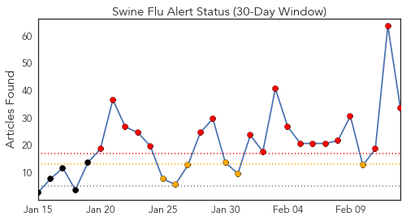
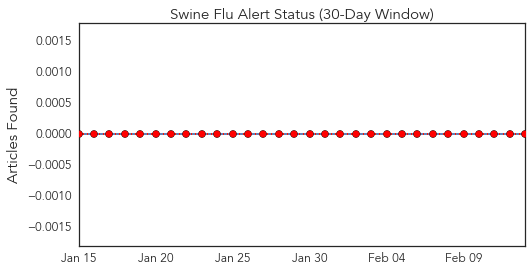
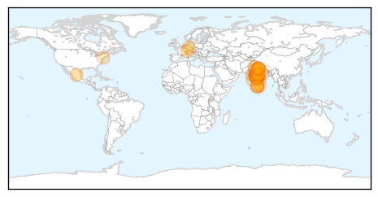
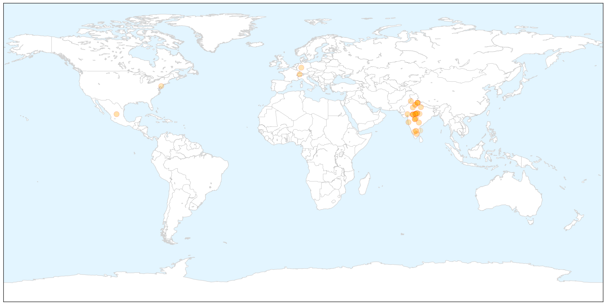
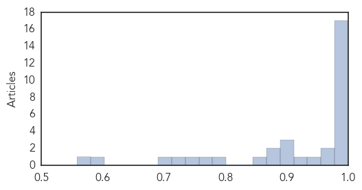
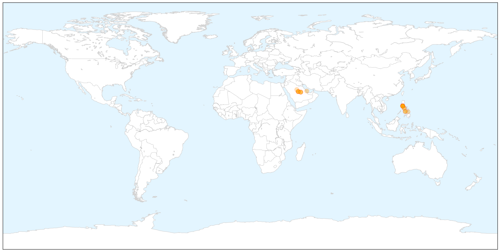

Swine Flu
30-Day Web Trend
19 alerts, 6 warnings

30-Day Twitter Trend
0 alerts, 0 warnings

Article Locations

X

Article Confidences
Top Articles:
- 1.000
- Tamil Nadu sees 186 H1N1 cases this year
- 0.999
- PM steps in as swine flu toll mounts to 485
- 0.999
- Swine flu spike raises concern in India
- 0.999
- Surveillance increases across Vadodara district
- 0.999
- First swine flu death in city
- 0.999
- Swiss Tourist Dies of Swine Flu in India ‹ Newsweek Pakistan
- 0.999
- The Union Government Issues guidelines to deal with increasing number of H1N1 cases
- 0.997
- Telangana: Death toll rises to 45 after 3 more die of Swine Flu
- 0.995
- Swine flu in India: 45-yr-old man dies in UP, toll mounts to 3
- 0.995
- State has sufficient provisions to tackle swine flu: MP Govt tells HC
- 0.994
- Swine Flu Kills More Than 400 People in India This Year, Double All of 2014
- 0.991
- Nadda Meets PM to Discuss Swine Flu
- 0.990
- 2 more die of swine flu in Punjab, toll due to H1N1 virus rises to 21
- 0.988
- Rajasthan swine flu toll touches 135
- 0.987
- Swine flu devours 4
- 0.983
- 6 Die in 24 Hours Due to Swine Flu in Madhya Pradesh, Say Sources
- 0.983
- HC steps in as MP govt maintains 'silence' on swine flu toll
- 0.974
- India sees big spurt in swine flu cases in 2015
- 0.968
- Health Minister meets PM Modi to discuss swine flu cases
- 0.953
- 16 more test positive for swine flu in Mumbai
- 0.925
- Scindia demands swine flu labs at Bhopal, Indore and Gwalior
- 0.898
- Eula Bliss’s timely study of disease and vaccination
- 0.894
- Swine flu drug: more stockists to get licences
- 0.893
- Swine Flu epidemic: Congress calls it criminal negligence
- 0.870
- Scindia demands swine flu labs at Bhopal, Indore and Gwalior
- 0.869
- Jyotiraditya Scindia demands swine flu labs in Bhopal, Indore and Gwalior
- 0.854
- Madhya Pradesh high court raps goverment for swine flu apathy
- 0.801
- Vaccines play crucial role in medicine
- 0.766
- Swine flu: HC pulls up Govt for casual approach
- 0.748
- One tests positive for H1N1 in Mysuru
- 0.718
- 'Will Tackle H1N1 Drug Shortage'
- 0.700
- Mysuru gets hi-tech lab for testing H1N1, Ebola
- 0.600
- Swine flu scare pushes up sale of surgical masks in Bhopal
- 0.558
- Canada to introduce cheaper drugs in India
Top Tweets:
-
No tweets found for Feb 13, 2015
MERS
30-Day Web Trend
3 alerts, 0 warnings

30-Day Twitter Trend
4 alerts, 0 warnings

Article Locations

X

Article Confidences

Top Articles:
- 0.999
- Filipina nurse from Saudi tests positive for MERS-CoV
- 0.999
- Eleven people linked to Philippines Mers case show symptoms
- 0.999
- 11 linked to Mers case ‘reveal symptoms’
- 0.999
- Eleven people linked to Philippines MERS case show symptoms -WHO
- 0.998
- 11 co-passengers of Mers-CoV patient showed symptoms
- 0.997
- 11 Filipinos show symptoms of MERS-CoV after contact with nurse with same condition
- 0.995
- 10 more admitted to RITM for MERS-CoV check
- 0.990
- OFW back in North Cotabato exhibiting Mers-CoV symptoms
- 0.988
- MERS claims 2 more livesHealthcare
- 0.988
- 11 patients have MERS-CoV symptoms - DOH
- 0.986
- Saudi Arabia confirms 8 new MERS cases
- 0.985
- 11 linked to Philippines MERS case showing symptoms, says WHO
- 0.979
- 11 people who had contact with infected nurse show MERS-CoV symptoms
- 0.978
- Headlines, News, The Philippine Star
- 0.976
- Top Stories
- 0.969
- MERS in the Philippines: DOH says 11 contacts admitted at RITM
- 0.967
- 11 who had close contact with PH nurse showing Mers-CoV symptoms—DOH
- 0.966
- 11 in contact with nurse show symptoms of MERS
- 0.950
- DOH: 11 close contacts of MERS-CoV nurse to undergo second round of tests
- 0.880
- Woman dies of MERS, 7 more infectedSaudi Arabia
- 0.863
- 2 of 5 Zamboangueños from Saudi plane with positive MERS-CoV case traced
- 0.802
- 2 of 5 Zambo residents who were with MERS-CoV-positive Filipina nurse located
Top Tweets:
-
No tweets found for Feb 13, 2015